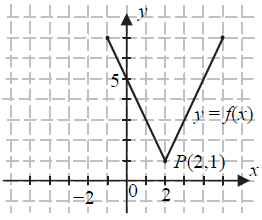
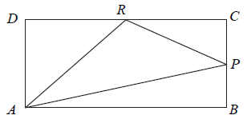

Matura 2015 sierpień - technikum
Niech \(a=\frac{2}{3}\), \(b=\frac{1}{2}\). Wtedy wartość wyrażenia
\(\frac{a+b}{a\cdot b}\) jest równa
A.\( \frac{7}{2} \)
B.\( \frac{9}{5} \)
C.\( \frac{7}{18} \)
D.\( \frac{3}{2} \)
A
Cenę pewnego towaru obniżano dwukrotnie, za każdym razem o \(20\%\). Takie dwie
obniżki ceny tego towaru można zastąpić równoważną im jedną obniżką
A.o \( 40\% \)
B.o \( 36\% \)
C.o \( 32\% \)
D.o \( 28\% \)
B
Liczba \(\frac{5^{12}\cdot 9^5}{15^{10}}\) jest równa
A.\( 25 \)
B.\( 3^7 \)
C.\( 3^3 \)
D.\( \frac{25}{27} \)
A
W rozwinięciu dziesiętnym ułamka \(\frac{2}{7}\) na trzydziestym miejscu po
przecinku stoi cyfra
A.\( 7 \)
B.\( 1 \)
C.\( 2 \)
D.\( 4 \)
D
Wskaż największą liczbę całkowitą spełniającą nierówność \(\frac{x}{4}-\sqrt{3}\lt
0\).
A.\( 5 \)
B.\( 6 \)
C.\( 7 \)
D.\( 8 \)
B
Wyrażenie \(9 − ( y − 3)^2\) jest równe
A.\( -y^2+18 \)
B.\( -y^2+6y \)
C.\( -y^2 \)
D.\( -y^2+6y+18 \)
B
Iloczyn liczb spełniających równanie
\(\left(x-\frac{1}{2}\right)^2-\frac{25}{4}=0\) jest równy
A.\( 6 \)
B.\( -5 \)
C.\( 5 \)
D.\( -6 \)
D
Wierzchołek paraboli będącej wykresem funkcji kwadratowej \(y = f (x)\) ma
współrzędne \((2, 2)\). Wówczas wierzchołek paraboli będącej wykresem funkcji \(g(x) = f(x + 2)\) ma
współrzędne
A.\( (4,2) \)
B.\( (0,2) \)
C.\( (2,0) \)
D.\( (2,4) \)
B
Miejsce zerowe funkcji liniowej \(f(x) = x + 3m\) jest większe od \(2\) dla każdej
liczby \(m\) spełniającej warunek
A.\( m\lt -\frac{2}{3} \)
B.\( -\frac{2}{3}\lt m\lt \frac{1}{3} \)
C.\( \frac{1}{3}\lt m\lt 1 \)
D.\( m\gt 1 \)
A
Na rysunku przedstawiony jest wykres funkcji \(f\).  Wskaż wzór funkcji, której wykres jest symetryczny do wykresu
funkcji \(f\) względem osi \(Oy\) układu współrzędnych.
A.\( y=f(x-4) \)
B.\( y=f(x)-4 \)
C.\( y=f(x+4) \)
D.\( y=f(x)+4 \)
C
Osią symetrii wykresu funkcji kwadratowej \(f(x) = −2x^2 −8x + 6\) jest prosta o
równaniu
A.\( y=2 \)
B.\( y=-2 \)
C.\( x=2 \)
D.\( x=-2 \)
D
Ciąg \((a_n)\) jest określony dla \(n\ge 1\) wzorem: \(a_n=2n-1\). Suma jedenastu
początkowych wyrazów tego ciągu jest równa
A.\( 101 \)
B.\( 121 \)
C.\( 99 \)
D.\( 81 \)
B
Dany jest ciąg arytmetyczny \((a_n)\) dla \(n\ge 1\), w którym \(a_{10}=11\) oraz
\(a_{100}=111\). Wtedy różnica \(r\) tego ciągu jest równa
A.\( \frac{9}{10} \)
B.\( -100 \)
C.\( \frac{10}{9} \)
D.\( 100 \)
C
W trójkącie prostokątnym o długościach przyprostokątnych \(2\) i \(5\) cosinus
większego z kątów ostrych jest równy
A.\( \frac{5}{2} \)
B.\( \frac{2}{5} \)
C.\( \frac{2}{\sqrt{29}} \)
D.\( \frac{5}{\sqrt{29}} \)
C
Kąt \(\alpha \) jest ostry oraz \(3\sin \alpha -\sqrt{3}\cos \alpha =0\). Wtedy
A.\( \operatorname{tg} \alpha =\frac{1}{3} \)
B.\( \operatorname{tg} \alpha =3 \)
C.\( \operatorname{tg} \alpha =\sqrt{3} \)
D.\( \operatorname{tg} \alpha =\frac{\sqrt{3}}{3} \)
D
Dłuższa przekątna sześciokąta foremnego ma długość \(2\sqrt{2}\). Pole tego
sześciokąta jest równe
A.\( 12\sqrt{3} \)
B.\( 6\sqrt{3} \)
C.\( 2\sqrt{3} \)
D.\( 3\sqrt{3} \)
D
Obwody dwóch trójkątów podobnych, których pola pozostają w stosunku \(1:4\), mogą
być równe
A.\( 9 \) i \(36\)
B.\( 18 \) i \(36\)
C.\( 9 \) i \(144\)
D.\( 18 \) i \(144\)
B
Punkty \(A = (3, 2)\) i \(C\) są przeciwległymi wierzchołkami kwadratu \(ABCD\), a
punkt \(O = (6,5)\) jest środkiem okręgu opisanego na tym kwadracie. Współrzędne punktu \(C\) są
równe
A.\( (9,8) \)
B.\( (15,12) \)
C.\( \left(4\frac{1}{2},3\frac{1}{2}\right) \)
D.\( (3,3) \)
A
Okrąg opisany równaniem \((x−3)^2 + (y + 2)^2 = r^2\) jest styczny do osi \(Oy\).
Promień \(r\) tego okręgu jest równy
A.\( \sqrt{13} \)
B.\( \sqrt{5} \)
C.\( 3 \)
D.\( 2 \)
C
Każda krawędź ostrosłupa prawidłowego trójkątnego ma długość \(9\) (ostrosłup taki
jest nazywany czworościanem foremnym). Wysokość tego ostrosłupa jest równa
A.\( 3\sqrt{6} \)
B.\( 3\sqrt{3} \)
C.\( 2\sqrt{6} \)
D.\( 3\sqrt{2} \)
A
Dane są punkty \(A = (2, 3)\) oraz \(B = (−6, −3)\). Promień okręgu wpisanego w
trójkąt równoboczny \(ABC\) jest równy
A.\( \frac{20\sqrt{3}}{3} \)
B.\( \frac{40\sqrt{3}}{3} \)
C.\( \frac{5\sqrt{3}}{3} \)
D.\( \frac{10\sqrt{3}}{3} \)
C
Pole podstawy graniastosłupa prawidłowego czworokątnego jest równe \(36\), a miara
kąta nachylenia przekątnej graniastosłupa do płaszczyzny jego podstawy jest równa \(30^\circ\).
Wysokość tego graniastosłupa jest równa
A.\( 3\sqrt{2} \)
B.\( 6\sqrt{2} \)
C.\( 2\sqrt{6} \)
D.\( 3\sqrt{6} \)
C
Ze zbioru \(\{0, 1, 2, ..., 15\}\) losujemy jedną liczbę. Prawdopodobieństwo
wylosowania liczby pierwszej jest równe
A.\( \frac{7}{16} \)
B.\( \frac{3}{8} \)
C.\( \frac{6}{15} \)
D.\( \frac{7}{15} \)
B
Medianą zestawu danych \(9, 1, 4, x, 7, 9\) jest liczba \(8\). Wtedy \(x\) może być
równe
A.\( 8 \)
B.\( 4 \)
C.\( 7 \)
D.\( 9 \)
D
Ile jest wszystkich liczb czterocyfrowych, większych od \(3000\), utworzonych
wyłącznie z cyfr \(1, 2, 3\), przy założeniu, że cyfry mogą się powtarzać, ale nie wszystkie z tych
cyfr muszą być wykorzystane?
A.\( 3 \)
B.\( 6 \)
C.\( 9 \)
D.\( 27 \)
D
Rozwiąż równanie \(8x^3 +8x^2 −3x − 3 = 0\).
\(x=-1\) lub \(x=\frac{\sqrt{6}}{4}\) lub \(x=-\frac{\sqrt{6}}{4}\)
Rozwiąż nierówność \(5x^2 − 45 \le 0\).
\(x\in \langle -3;3\rangle \)
Ze zbioru liczb naturalnych dwucyfrowych losowo wybieramy jedną liczbę. Oblicz
prawdopodobieństwo zdarzenia \(A\) polegającego na tym, że otrzymamy liczbę podzielną przez \(9\)
lub podzielną przez \(12\).
\(P(A)=\frac{8}{45}\)
Kąt \(\alpha \) jest ostry i spełnia równość \(\operatorname{tg} \alpha
+\frac{1}{\operatorname{tg} \alpha }=\frac{7}{2}\). Oblicz wartość wyrażenia \(\sin \alpha \cdot
\cos \alpha \).
\(\frac{2}{7}\)
Wykaż, że dla wszystkich nieujemnych liczb rzeczywistych \(x\), \(y\) prawdziwa
jest nierówność \(x^3 + y^3 \ge x^2y + xy^2\).
W prostokącie \(ABCD\) punkt \(P\) jest środkiem boku \(BC\), a punkt \(R\) jest
środkiem boku \(CD\). Wykaż, że pole trójkąta \(APR\) jest równe sumie pól trójkątów \(ADR\) oraz
\(PCR\). 
Dany jest ciąg arytmetyczny \((a_n)\) o różnicy \(r \ne 0\) i pierwszym wyrazie
\(a_1 = 2\). Pierwszy, drugi i czwarty wyraz tego ciągu są odpowiednio pierwszym, drugim i trzecim
wyrazem ciągu geometrycznego. Oblicz iloraz tego ciągu geometrycznego.
\(q=2\)
Wyznacz równanie osi symetrii trójkąta o wierzchołkach \(A = (−2, 2)\), \(B = (6, −
2)\), \(C = (10,6)\).
\(y=-3x+16\)
W ostrosłupie prawidłowym czworokątnym ściana boczna o polu równym \(10\) jest
nachylona do płaszczyzny podstawy pod kątem \(60^\circ\). Oblicz objętość tego ostrosłupa.
\(V=\frac{20\sqrt{15}}{3}\)